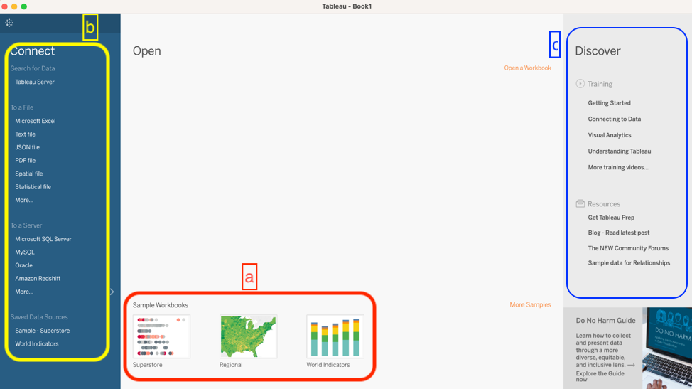
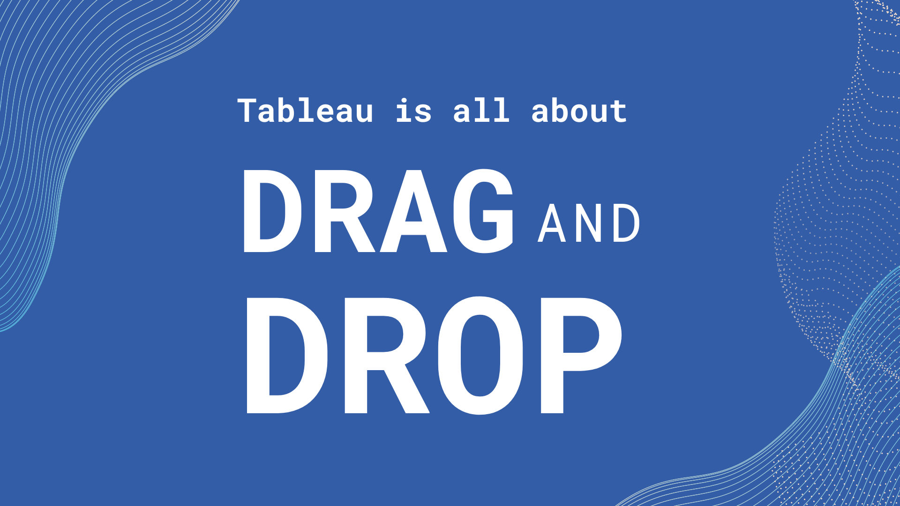
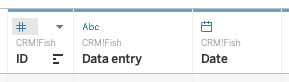
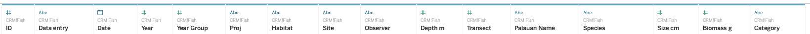
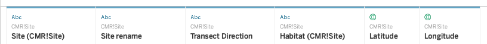
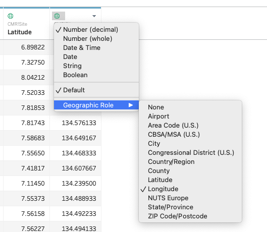

Module 3 Visualizing Data
3.1 Tableau Basics
In this Session
- Learning Objectives
- Value Statement
- User Interface
- Loading Data
- Opening a file
- Checking Data Types
- Sheets
- Summary
3.1.1 Learning Objectives
- Get familiar with the user interface of Tableau
- Learn how to connect data sets to Tableau interface
3.1.2 Why Tableau?
- We are focusing on Tableau for two primary reasons.
- First, Tableau can read a variety of data types, as you will learn in this session. This means that many different software applications and assets can be combined in a single visualization to present to your audience.
- Second, Tableau is extremely intuitive. Once you get a grasp of the basic skills, you can create compelling visualizations of data in half of the time it would take in other coding software applications.
- Note: For this training, all the exercises and examples were done with Tableau version 2021.1.
3.1.3 Installing Tableau
- Let’s get started with installing the software, to do so, go to https://www.tableau.com/ and select “Try Tableau for Free”
- Register your email address and username and download the software
- Once installed, input your key (you get one when you buy the software) and you are ready to go
- Important note: Tableau offers free 1-year licenses for educational purposes. If you belong to an academic institution, get a free license by going to https://www.tableau.com/community/academic. Once there, click on “Free student license”. You will need to provide information about your academic institution to validate your educational license.
3.1.4 User Interface
- Let’s open Tableau! The image below is what you will see the first time you open Tableau. Once you start to save workbooks, they will populate here under Open.

- The examples under Sample Workbooks are a great resource for inspiration to see the potential of Tableau.
- This column on the left is where you will load data.
- The Training and Resources tabs are very useful to help you keep learning new skills. If you are interested in investigating or expanding your skills, we recommend starting with the materials in these tabs, rather than searching for other sources on the internet. The materials in these two tabs are very well thought out and provide step-by-step instructions on how to learn new Tableau skills.
3.1.5 Loading Data
- The most important section of this interface is the Connect menu, where you will load data. There are three main categories of sources that you can load into Tableau.
- Tableau Server: Data you have saved through your Tableau account. We will not cover that process in this course because most of the users of this training will probably not have a server setup explicitly for Tableau.
- Connecting to a local file: Files from your computer can be Excel files, text files, statistical files, PDFs, and spatial files
- Text files include .csv .doc .log
- You are going to be using Text file frequently if you have .csv (comma separated value) files.
- Spatial files are commonly referred to as shape files or GIS files. If you have ever dealt with shape files, you might remember that shape files are composed of a few different files – some containing the coordinates, metadata, and a table. Tableau has made the adjustments necessary to load one shape file and all the associated files.
- As we will show this later in the course, you can load a shape file and Tableau will display it in a map with just a few clicks.
- Text files include .csv .doc .log
- Connecting to a server: You can connect to services that are online like Google Sheets, or Microsoft Office 365.
- One of the benefits of using this approach is that when you modify the original file, the modifications will be directly updated in Tableau.
- Let’s say you created a report with nice graphs in 2020 because that’s the data that you had when you created the report and then in 2021 you edited your Google sheet. The next time you open your Tableau workbook, all the data will be updated and contain the new data from 2021.
- Let’s say you created a report with nice graphs in 2020 because that’s the data that you had when you created the report and then in 2021 you edited your Google sheet. The next time you open your Tableau workbook, all the data will be updated and contain the new data from 2021.
- One of the benefits of using this approach is that when you modify the original file, the modifications will be directly updated in Tableau.
- It’s very important to make sure that you organize and manage your files such that you know exactly where your files are. Keep in mind that if you connect to a server, any changes that you make in the original file will have an impact on how your visualization looks in Tableau.
3.1.6 Opening a file
- Create a new folder on your desktop. Name the folder “Tableau Data Training”
- Download this file: CRM_Fish_edit and save it in the “Tableau Data Training” folder
- Follow along with this video to connect the new data file to Tableau
- Progress check-in. So far, you have:
- Downloaded an excel file and connected it to Tableau
- In Tableau, you learned about drag and drop. As Alfredo always says, “Tableau is all about drag and drop.”
- You connected the two tabs CRM_Fish and CMR_Site within the CRM_fish_edit Excel file—now in the Tableau interface. There is an orange line showing the connection.

3.1.7 Checking Data Types
- When you load a data file, you have to check that Tableau properly labels the data types. Here, we will discuss what those data types are and how they are assigned in Tableau.
- Dimensions and Measurements
- Dimension (also referred to as factor) is any information that is defined a priori of your actual sampling and helps to describe or categorize your results. Whenever you can call something a category it is a factor. Example: Site name, species, habitat,
- Measurements are the actual results of your sampling. They are usually numbers that you went into the field to measure.
- Example: Fish size, population count, temperature
- Tricky Case: Coordinates
- Coordinates are a factor when you already know the coordinates where you are going to take your sample. Example: You have ten sites that you visit each year to count the number of whales. The coordinates of each site are a factor because they are predetermined. You know where you are going to gather data each time.
- Coordinates are a measurement when it is part of the information that you are recording and it is not predefined. Example: you put a gps tracker on a whale and every time the whale surfaces, you record the coordinates. You did not know ahead of time where the whale would surface and the location is what the study is measuring.
- Tricky case: Is depth a factor or a measurement?
- Depth is a factor when indicating a transect location. Example: If you are always putting transects at either 3m or 30m you can categorize depth into shallow or deep.
- Depth is a measurement when it is recorded with every observation. Example: If you are swimming for 50 minutes to record visual observations of fish while also noting the depth at each observation, then depth is also a measurement. You measured and recorded your depth as you recorded the observation of the fish.
- Practice exercise: Time
- SCENARIO 1: Let’s say that you are birdwatching and you want to know what time of day birds are more active. You count the birds and you write down the time that you saw each bird. Is time a measurement or a factor?
- Answer: Measurement because you are registering the time every time you see a bird.
- SCENARIO 2: You want to know whether there are more birds in the morning, the afternoon, or in the evening.
- Answer: In this case, time is a factor because you go out three times a day, you count all the birds you see at that time and categorize by morning, afternoon, or evening.
- SCENARIO 1: Let’s say that you are birdwatching and you want to know what time of day birds are more active. You count the birds and you write down the time that you saw each bird. Is time a measurement or a factor?
- Types of Data
- Different ways computers classify data:
- Numeric - integers, decimals
- Any kind of numeric field, except Boolean (binary or true/false statements). Examples include integer, double, floating, etc.
- Text - strings, including special characters
- Yes/no, true/false - Also known as logical or boolean
- Spatial Location - Coordinates, Country Name, City Name, ZIP code
- Date and time. Tableau can recognize different date formats. One best practice is to separate fields for year, month, and day, which can be linked together directly in Tableau.
- Numeric - integers, decimals
- Different ways computers classify data:
- Discrete and Continuous Data
- Discrete data refer to variables that can only be conceptualized in a unitary manner. It is quite similar to the difference between using many vs much. In this case, discrete data would be for things described as many.
- Example for text – color, name, city
- Example for numbers – number of transects conducted, position in a ranking
- Continuous data refer to variables that cannot be counted by units, but instead as continuous amounts. Following the example above, continuous data would be for things described as much.
- Example: number of fish recorded, total biomass, height, depth
- Discrete data refer to variables that can only be conceptualized in a unitary manner. It is quite similar to the difference between using many vs much. In this case, discrete data would be for things described as many.
- Dimensions and Measurements
- You should go through the preview of the data and ensure that each column is labeled correctly.
- Note: Never skip this step even if you have worked with the data set in Tableau before!
- The type of data is shown as symbols above the column title

- As you can see, the ID column is correctly labeled as a number; Data entry is a string (or text); and Date is a date (little calendar symbol).
- Note: Remember string is a synonym for text in Tableau.
- To change the label, click on the symbol and a drop-down menu will appear.
- The CRM_Fish table should look like this:

- The CMR_Site table should look like this:

- Notice that Latitude and Longitude are spatial data. If you open the drop-down, you will see that you can specify the type of spatial data provided under Geographic Role.

3.1.8 Sheets
- Sheets Cheat Sheet
- Discrete vs. Continuous
- DISCRETE is Blue
- CONTINUOUS is Green
- Factors vs. Measures
- Above the grey line is a FACTOR
- Below the grey line is a MEASURE
- Discrete vs. Continuous
3.1.9 Summary
- Great job! You have completed your first in depth Tableau session. Now, you know how to explore Tableau’s user interface, to connect a data file, check data types, and open sheets.